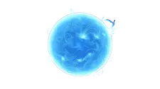
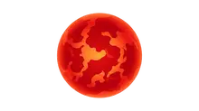
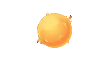
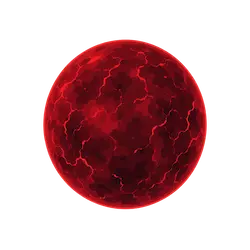
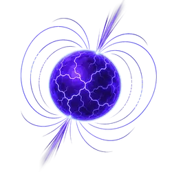

Ciclos e formas das estrelas
Estrelas não são todas iguais. Elas nascem, evoluem e morrem em processos que podem durar bilhões de anos. Cada tipo revela um estágio diferente da evolução estelar e ajuda a entender como o universo se transforma ao longo do tempo.

Estrela AzulTamanho: Muito grande
Temperatura: Muito alta (até ~40.000 K)
Vida útil: Curta (milhões de anos)
Curiosidade: Brilham mais que o Sol, mas vivem menos

Gigante VermelhaTamanho: Muito grande
Fase: Final da vida estelar
Temperatura: Superfície mais fria
Curiosidade: O Sol se tornará uma no futuro

Estrela AmarelaTamanho: Médio
Temperatura: ~5.500 K
Vida útil: Bilhões de anos
Curiosidade: O Sol é uma estrela desse tipo

Anã VermelhaTamanho: Pequeno
Temperatura: Baixa (até ~3.500 K)
Vida útil: Trilhões de anos
Curiosidade: São as estrelas mais comuns do universo
Anã Branca
Tamanho: Semelhante à Terra
Densidade: Extremamente alta
Estado: Núcleo remanescente
Curiosidade: 1 colher pesa toneladas

Estrela de NêutronsTamanho: ~20 km de diâmetro
Densidade: Extremamente alta
Origem: Restos de supernova
Curiosidade: 1 colher pesa bilhões de toneladas